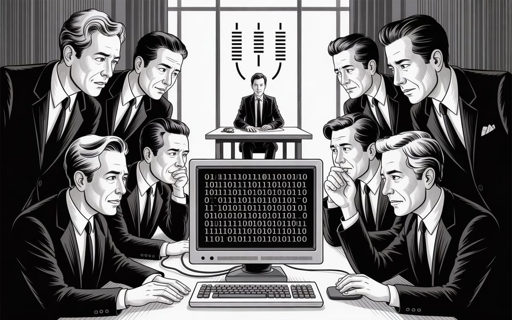

:: Now begins a story...
May I present to you, a finely curated section of a fine collection of the wonderful web we weave with a weekly roundup of bits and pieces from the far corners of the super information highway that I like to call — Token Wisdom ✨


"We're witnessing the collapse of digital privacy as we know it. Quantum computing threatens to shatter our cryptographic foundations while governments systematically dismantle anonymity online. The question isn't whether our current security will survive—it's whether we'll build something better before it's too late."
— At least that's what my encryption algorithms whispered before they started having existential crises. But who am I to argue with paranoid math? My security clearance is still pending quantum approval 😝

Editor's Notes 📆
Week 46 of 52 // November 9th 🧿 November 15th, 2025
Welcome to the 134th edition! This week we explore the intersection of quantum computing threats and privacy erosion—from cryptographic obsolescence to systematic surveillance expansion. We're examining how forgotten computational pioneers shaped our digital world, why government spyware is proliferating, and how corporate giants profit from our data vulnerabilities.
The convergence of quantum capabilities, surveillance technology, and corporate interests reveals a world where digital privacy faces unprecedented challenges from multiple fronts simultaneously.

🔮 Pearls of Wisdom, The Latest Edition...
Get smart, fast. If you're pressed for time and want to keep up to date!
Enjoy The Newest Latest, A Closer Look & Time Well Spent!

🎉 Newest / Latest
100% Authentic Humanly Chosen

Quantum Threats, Privacy Erosion, and Digital Surveillance
This week's collection examines how quantum computing threatens current cryptography, how online anonymity continues its global decline, and how corporate and government surveillance expands unchecked. From breakthrough physics to covert operations, we're witnessing the transformation of digital security and privacy in an increasingly monitored world.
- Quantum Computing Will Make Cryptography Obsolete
Scientists race to develop quantum-resistant encryption as quantum computers threaten to render current cryptographic systems useless. Learn more at Live Science - Online Anonymity Declines for 15th Consecutive Year
From age verification to weakening encryption, 2025 marks another year of eroding internet freedoms worldwide. Discover at TechRadar - The Forgotten Pioneers of Computational Physics
Iulia Georgescu highlights the unsung heroes who built the foundation of modern computational science and calls for recognition of research software engineers. Read more at Physics World - CIA's Secret Mission to Sabotage Afghan Opium
Decade-long covert operation involved modifying poppy seeds and aerial deployment to weaken Afghanistan's opium crop potency. Explore at The Washington Post - Sky-High Beef Prices: A Supply and Demand Lesson
Commodity prices climb 23% above five-year average as ground beef costs surge 19% in economic supply chain disruption. Learn more at The Globe and Mail - Physicists Remove Imaginary Numbers from Quantum MechanicsBreakthrough mathematical formulation brings quantum theory into new era of inquiry using exclusively real numbers. Discover at Quanta Magazine
- Global Cost of Living Index 2025 Mapped
Comprehensive analysis comparing expenses across 140+ countries relative to New York City baseline reveals economic disparities. Explore at Visual Capitalist - Government Spyware Targets Expand Beyond Criminals
Surveillance vendors' claims of limited use contradicted by broad range of victims including journalists, activists, and political consultants. Read more at TechCrunch - Meta Earns $16 Billion from Fraudulent Ads
Internal documents reveal Meta's massive revenue stream from scam advertisements on Facebook and Instagram platforms. Learn more at Cybernews - Chipmaking Industry Fights Patent Office Fees
Semiconductor Industry Association opposes proposed annual fees based on assessed value, calling it a "tax on innovation." Discover at Tom's Hardware
👁️ A Closer Look
Unearthing gems in the digital landscape.

Because in the ever-evolving tech world, there's always more to learn and laugh about.
When Two's Company, Three's a Revolution
How China's Quest for Energy Efficiency Sparked Computing's Next Paradigm
Sanctions backfire spectacularly: When the U.S. blocked Huawei from advanced chips, China's tech giant didn't just work around the restrictions—they revolutionized computing itself. Their breakthrough ternary processor doesn't just compete with binary systems, it makes them obsolete. Every computer running today just became yesterday's technology. The question isn't whether ternary will replace binary, but how fast the transition happens.
 🌶️ iamkhayyam
🌶️ iamkhayyam


Binary, meet your successor. It's not personal, it's just ternary
A Closer Look: Explorations in Technology
Weekly essay in the areas of blockchain, artificial intelligence, extended reality, quantum computing, and all the bits and pieces.

A Closer Look: Explorations in Technology
Weekly essay in the areas of blockchain, artificial intelligence, extended reality, quantum computing, and all the bits and pieces.


📺 Time Well Spent
Top Ten of the Time I Spend

From Quantum Mysteries to Digital Crime: Exploring Tech's Dark Arts
This week's video collection explores the shadowy intersection of technology, security, and human behavior. We journey from mysterious resonance devices to criminal hacking operations, examining how creative minds exploit, defend, and innovate in our increasingly connected world.
- Reverse Engineering a Schumann Resonator
Controversial device designed to generate low-level electromagnetic signals that emulate natural atmospheric phenomena. YouTube - I Build a Machine That Turns You Into a Criminal
Rootkid's 2025 exhibit exploring the intersection of technology and criminality through interactive digital art. YouTube - 19-Year-Old Hacker Who Outsmarted the Internet
The story of Zain Qaiser, who hijacked Google, Pornhub, and Yahoo ads in 2013, stealing millions overnight. YouTube - Your AI Chats Aren't Private: Microsoft Just Proved It
System Fracture episode revealing how Microsoft demonstrated the vulnerability of AI conversation privacy. YouTube - DEFCON is Not What I Expected
First-time visitor's journey through the world's largest hacker convention, revealing community over chaos. YouTube - NFL Technology You Didn't Know Exists
From $300,000 cameras to microchipped mouthguards, exploring the cutting-edge tech transforming professional football. YouTube - How Boston Fooled Everyone and Changed Music Forever
The revolutionary band's innovative use of the Rockman device and studio techniques that defined 70s rock. YouTube - Maybe This Phone ISN'T Just for Criminals - Trying GrapheneOS
Month-long test of the privacy-focused operating system reveals surprising insights about secure mobile computing. YouTube - Why Is This Mega-City In the Middle of Nowhere?
Exploring Edmonton's unlikely existence as a million-person city surrounded by Canadian wilderness and industrial infrastructure. YouTube - TAP and You're Broke: The Wireless Skimming Scam
Investigation into the spread of contactless payment fraud and RFID skimming techniques targeting debit and credit cards. YouTube

✨Token Wisdom
Knowledge Transmuted
In this 134th edition of Token Wisdom, we've examined the convergence of quantum threats, privacy erosion, and digital surveillance. Our "Newest Latest" highlights how quantum computing endangers current cryptography while governments systematically dismantle online anonymity.
These developments illustrate how our digital security landscape faces unprecedented challenges from multiple directions. From quantum computing breakthroughs to corporate surveillance profits, we're seeing how fundamental questions about privacy and security remain at the forefront of technological evolution. The thread connecting these developments is clear: whether in quantum physics, government operations, or corporate data harvesting, today's discoveries often reveal new vulnerabilities in our interconnected world.

🌈💫 The Less You Know
The More You Learn
Latest Technologies & Innovations:
- Quantum-Resistant Cryptography: Post-quantum security algorithm development
- Privacy Erosion Tracking: Global internet freedom monitoring systems
- Computational Physics: Historical software engineering recognition
- Covert Agricultural Operations: Modified crop genetic engineering
- Economic Supply Analysis: Commodity price tracking and prediction
- Real Number Quantum Mechanics: Mathematical formulation breakthroughs
- Global Cost Indexing: International economic comparison systems
- Government Spyware: Civilian surveillance technology expansion
- Fraudulent Ad Detection: Corporate revenue stream analysis
- Semiconductor Innovation: Patent system and industry protection
Most Important Topics:
- Quantum Cryptography: Security system obsolescence threats
- Digital Privacy: Global anonymity decline acceleration
- Surveillance Expansion: Government spyware civilian targeting
- Corporate Fraud: Meta's fraudulent advertising revenue streams
- Mathematical Innovation: Quantum mechanics real number formulation
- Economic Analysis: Supply chain disruption impact assessment
- Historical Recognition: Computational physics pioneer acknowledgment
- Covert Operations: CIA agricultural sabotage programs
- Patent Politics: Semiconductor industry fee opposition
- Cost Analysis: Global economic disparity mapping
Acronyms:
- CIA - Central Intelligence Agency
- NFL - National Football League
- RFID - Radio Frequency Identification
- AI - Artificial Intelligence
- VPN - Virtual Private Network
- GPU - Graphics Processing Unit
- CPU - Central Processing Unit
- USB - Universal Serial Bus
Technical Terms:
- Quantum-Resistant Encryption: Cryptography immune to quantum attacks
- Post-Quantum Cryptography: Security algorithms for quantum era
- Schumann Resonance: Natural electromagnetic frequency phenomenon
- GrapheneOS: Privacy-focused mobile operating system
- RFID Skimming: Contactless payment fraud technique
- Computational Physics: Computer-based scientific modeling
- Real Number Formulation: Mathematical approach using only real numbers
- Supply Chain Disruption: Economic distribution system breakdown
- Government Spyware: State-sponsored surveillance software
- Fraudulent Advertising: Deceptive commercial promotion schemes
Just because Jon Snow knows nothing, doesn’t mean you have to.
Embrace the pursuit of knowledge to shape a better tomorrow. Sign up for more Token Wisdom and carry the torch of foresight into the fathomless domains of innovation and beyond.
"In the quantum age of surveillance capitalism, privacy isn't just disappearing—it's being systematically dismantled by the very technologies we depend on. The real question isn't whether we can build better security, but whether we'll choose to before it's too late."
— Token Wisdom ✨
Until next time: stay smart, and kind, and definitely stay weird!
Become a Token Wisdom subscriber
Illuminate your inbox with the light of knowledge. ✨

Thank you for cruising by the Cult of Innovation
We’re making some Stone Soup here. If you enjoyed this amuse-bouche of news compilations in bite-sized morsels, please share it with your friends and help feed a community. Mmmm. #nomnom.